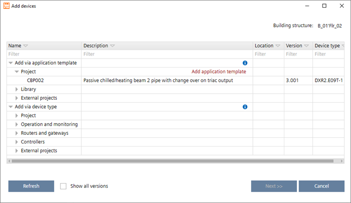
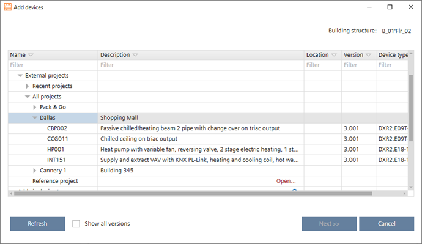

从其他项目复制设备
您可以将设备从一个项目复制到另一个项目Add devices对话框。
Add devices (Dialog box)

复制设备时，源设备的实例参数、I/O 配置（模块和数据点）和分配数据将复制到新创建的设备中。
Copy a device from another project
- You have another project which contains devices.
- You know the password of the other project.
- In Building > Building structure, right-click a building or building element and select Add devices.
- The Add devices dialog box opens.

- Open Device types > External projects.
Alternatively, open Reference project and click Open to select a project from your file system, which you my have received by email. - Expand your projects to see all devices contained in the projects.

- Select a device.
- Click Next.
- In the Number of new devices field, type the number of devices to be created.
- The table is updated automatically and shows the entered number of devices.
- Enter the details such as network address, equipment ID etc.
Click OK.
- The new devices are added to your building structure.